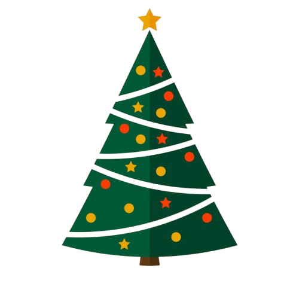
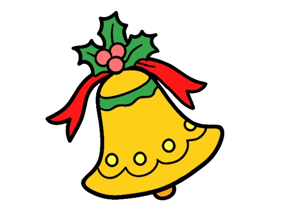

Feliz Navidad
La celebración de la Navidad tiene una historia rica y compleja que mezcla tradiciones religiosas y culturales de distintas épocas y lugares. Aunque hoy en día se celebra como una festividad cristiana, la historia de la Navidad se remonta a mucho antes de la llegada del cristianismo.
Orígenes Paganos
Antes de la era cristiana, muchas culturas antiguas celebraban el solsticio de invierno, que marca el día más corto del año y el renacimiento simbólico del sol. Los romanos, por ejemplo, celebraban la festividad de Saturnalia en honor a Saturno, el dios de la agricultura, una celebración que incluía intercambios de regalos, banquetes y decoraciones. Estas festividades influyeron en algunos de los elementos de la Navidad moderna, como la decoración y el intercambio de regalos.
El Cristianismo y el Nacimiento de Jesús
El 25 de diciembre fue establecido oficialmente como la fecha del nacimiento de Jesús por la Iglesia Católica en el siglo IV. La elección de esta fecha no se basa en evidencia histórica de la fecha real del nacimiento de Jesús, sino en una estrategia para absorber y cristianizar las festividades paganas del solsticio. La Navidad se convirtió en una festividad para conmemorar el nacimiento de Jesús, simbolizando luz, esperanza y salvación para los cristianos.
Expansión y Evolución de la Navidad
Con el tiempo, la Navidad se expandió a través de Europa y adoptó costumbres locales. En la Edad Media, la Navidad era una celebración alegre con desfiles, fiestas y representaciones teatrales. En los países germánicos, se integraron elementos como el árbol de Navidad, mientras que en el Reino Unido y Estados Unidos se popularizó el personaje de Santa Claus (o Papá Noel), basado en la figura de San Nicolás, un obispo que repartía regalos a los necesitados. La figura de Santa Claus se consolidó en la cultura popular durante el siglo XIX.
La Navidad en la Era Moderna
Hoy en día, la Navidad es una festividad global que se celebra de diferentes maneras. En muchas culturas, sigue siendo una celebración religiosa, pero también ha adoptado un carácter secular en diversas partes del mundo. Los rituales modernos incluyen el intercambio de regalos, la decoración de árboles de Navidad, la reunión con familiares y amigos, y la preparación de comidas especiales.
En resumen, la Navidad es una festividad que ha evolucionado a lo largo de los siglos, combinando influencias religiosas, culturales y comerciales. Su significado varía según las creencias de cada persona, pero su espíritu de generosidad y unidad continúa siendo central en las celebraciones actuales.